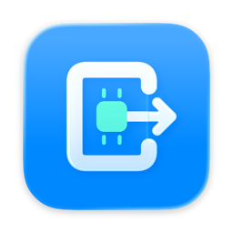
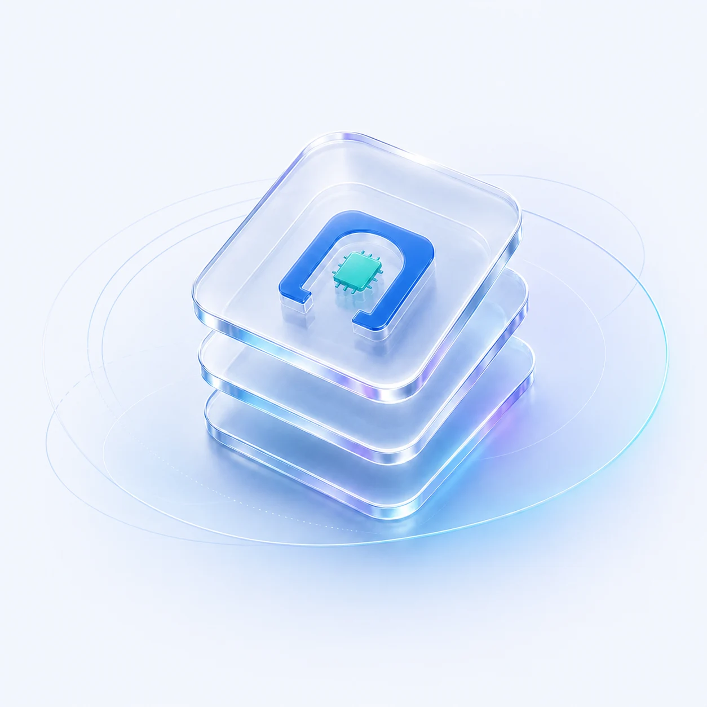

你的模型，由你掌控。
只读扫描你的模型目录，离线加载本地权重。何时启动、何时释放，由你决定。

MLX Gateway GitHub
只读扫描你的模型目录，离线加载本地权重。何时启动、何时释放，由你决定。
通过统一的 Responses 文本接口，让支持它的客户端连接当前运行的模型。
Swift 6 与原生 Liquid Glass。侧栏、快捷键与实时日志，融入熟悉的 macOS。
从选择模型到连接应用，
每一步，都清楚可见。
文本模型 · MLX
未启动my-text-model
http://127.0.0.1:44110/v1
等待你启动模型。
选择不会触发加载。API 请求也不会替你启动或切换模型。
当前开放非流式 Responses 文本请求；暂不支持工具调用、多模态输入或服务端会话。了解接口范围
开源，透明，持续生长。
为愿意掌控本地 AI
的你而构建。
git clone
https://github.com/Kamisato-Yuna/MLX-Gateway.git
本地构建需要自己的 Apple Development 签名。构建指南